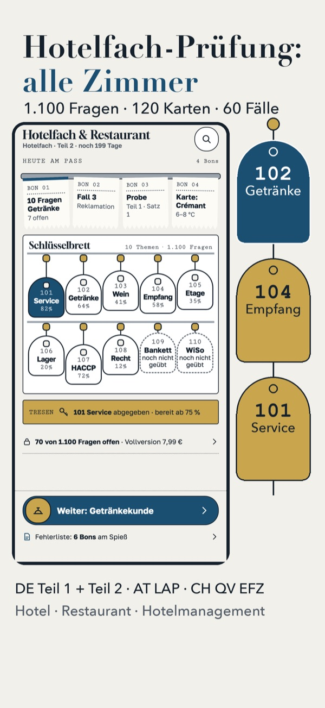
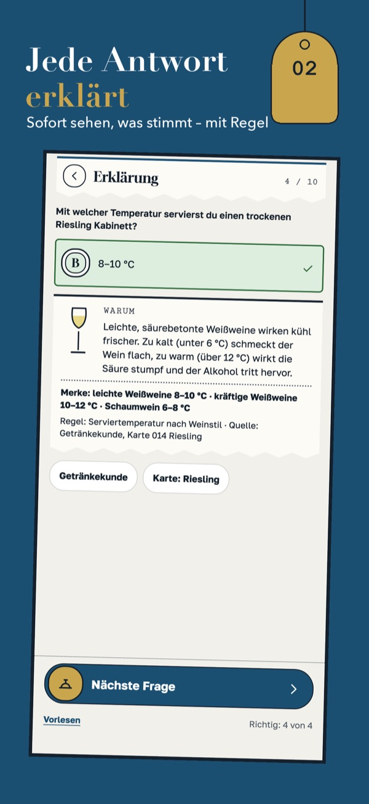
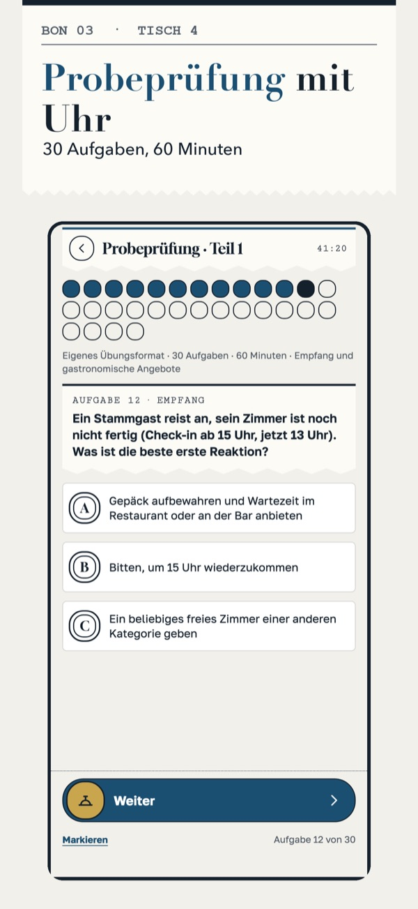

Abschlussprüfung & Getränke
Einmal kaufen – kein Abo. Hotelfach & Restaurant Prüfung begleitet dich zur Abschlussprüfung Teil 1 und Teil 2 (DE), zur LAP (AT) oder zum QV EFZ (CH): Service, Getränke, Wein, Empfang, Housekeeping, Warenwirtschaft, Hygiene, Gastrecht, Bankett und WiSo – jede Antwort erklärt.



Bald im App Store